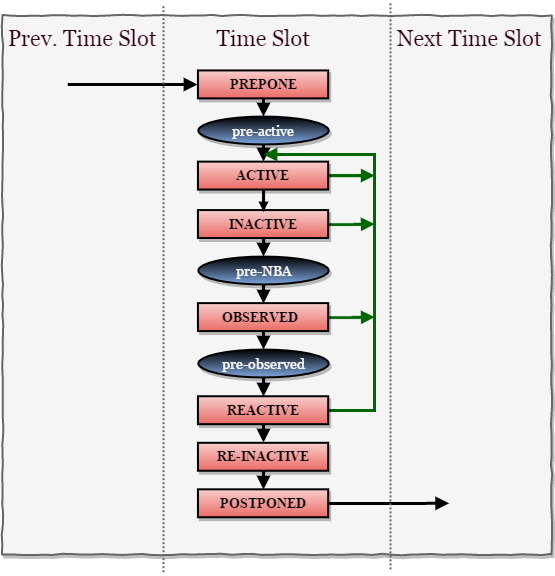

🔄 What Are Event Regions?
In SystemVerilog simulation, a single time unit (like #5) isn't a simple tick. It contains multiple sub-steps (event regions) to:
- 🧠 Evaluate expressions
- 💾 Apply updates
- ✅ Run assertions
- 🧪 Execute testbench code
- 🔍 Record or display outputs
These event regions prevent race conditions (when multiple signals update at the same time unpredictably).
🧩 The 12 Main Event Regions (in chronological order)
🧠 Visualization of Execution Order
Time Advance
↓
🟠 Preponed
↓
🟣 Pre-active
↓
🟢 Active → evaluates logic and RHS of <=
↓
🔵 Inactive → delayed #0
↓
🟤 Pre-NBA
↓
🔴 NBA → applies <= updates
↓
🟡 Post-NBA
↓
🧪 Observed → check assertions
↓
🧾 Post-Observed
↓
📦 Reactive → testbench/program runs
↓
💤 Re-Inactive → testbench #0 delays
↓
📸 Postponed → $strobe/$monitor/logs

1. 🟠 Preponed Region
What happens here?
Values are sampled (snapshotted) before any design logic executes.
Used by:
Concurrent assertions (assert property(...)) and cover properties
Why important?
Assertions use values from before changes are made, ensuring reliable checking.
assert property (@(posedge clk) a |=> b); // a is sampled in Preponed
2. 🟣 Pre-active Region
What happens here?
Reserved for simulation tools (PLI/DPI hooks).
Used by:
Tools that need to interact before simulation code runs.
Designers rarely use this.
3. 🟢 Active Region
What happens here?
Main design code runs: always, initial, assign
Blocking assignments (=)
RHS of non-blocking assignments (<=)
Why important?
Central logic stage. Evaluates expressions but delays NBA updates.
always @(posedge clk)
a = b + c; // evaluated & updated immediately
always @(posedge clk)
d <= a; // RHS is evaluated here, LHS updated later
4. 🔵 Inactive Region
What happens here?
Executes #0 delays that were scheduled from Active region.
Used for:
Temporarily deferring execution until design updates finish.
always @(posedge clk) begin
a = b;
#0 c = a; // executes in Inactive region
end
5. 🟤 Pre-NBA Region
What happens here?
Tools and simulators may inspect or modify values just before NBA updates.
Designers typically don't interact here.
6. 🔴 NBA (Non-Blocking Assignment) Region
What happens here?
Applies <= assignments.
Why delayed?
Ensures all RHS values are evaluated before any LHS update.
Prevents races — especially in pipelined logic.
always @(posedge clk) begin
a <= b; // RHS b evaluated in Active, update happens here
end
7. 🟡 Post-NBA Region
What happens here?
Another hook for tools or coverage libraries after NBA.
Can help in debugging or signal tracing.
8. 🧪 Observed Region
What happens here?
Concurrent assertions and cover checks are executed.
Values used?
From Preponed region snapshot.
Why?
To avoid checking "changed" values and ensure correctness.
9. 🧾 Post-Observed Region
What happens here?
Tool access for inspecting post-assertion state.
Used by tools, not for typical design/testbench logic.
10. 📦 Reactive Region
What happens here?
Testbench code runs: program blocks, interfaces, functional coverage
Important because:
Design always runs before testbench → testbench reacts with stable data.
program test;
initial begin
@(posedge clk); // Wait for design
$display("a = %0d", a); // read stable value
end
endprogram
11. 💤 Re-Inactive Region
What happens here?
Executes #0 delays in testbench or program blocks.
Like Inactive, but for testbench.
12. 📸 Postponed Region
What happens here?
Final stage of the time step.
Executes $monitor, $strobe, $dumpvars, $display.
Why?
Ensures final, stable values are shown/logged.
always @(a) $strobe("Value of a: %0d", a); // runs in Postponed
🧠 Visualization of Execution Order
Time Advance
↓
🟠 Preponed
↓
🟣 Pre-active
↓
🟢 Active → evaluates logic and RHS of <=
↓
🔵 Inactive → delayed #0
↓
🟤 Pre-NBA
↓
🔴 NBA → applies <= updates
↓
🟡 Post-NBA
↓
🧪 Observed → check assertions
↓
🧾 Post-Observed
↓
📦 Reactive → testbench/program runs
↓
💤 Re-Inactive → testbench #0 delays
↓
📸 Postponed → $strobe/$monitor/logs
🧠 Why This Matters in Real Designs
- 🛡️ Prevents Races:
You don’t want something like this:
Using <= pushes the update to NBA → avoids this.always @(posedge clk) a = b; always @(posedge clk) b = a; // could race if both use blocking "="
- 🔬 Assertions are Reliable:
They evaluate values before changes happen, making them trustworthy. - 🧪 Testbench Is Separated:
Design executes first, testbench reacts. You can observe, not interfere. - 📋 Final Values for Debug:
You get settled values in $display, $monitor, etc., after all updates are done.